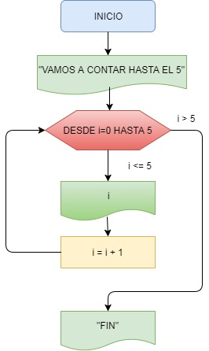

1.- Generador de perritos Random
Solamente selecciona el número de perritos que te gustaría que aparecieran.

Este tipo de estructura permite implementar la repetición de un cierto conjunto de instrucciones un número pre-determinado de veces.
Para ello se utiliza una variable de control del bucle, llamada también índice, que va recorriendo un conjunto pre-fijado de valores en un orden determinado. Para cada valor del índice en dicho conjunto, se ejecuta una vez el mismo conjunto de instrucciones
Solamente selecciona el número de perritos que te gustaría que aparecieran.
Da click en el botón empezar para mostrarte personajes random de rick and morty.
Selecciona el número de patitos que te gustaría ver. No seas malo con el algoritmo selecciona números no tan grandes ;).
Ingresa el año para saber a que siglo corresponde.
Ingresa el número que quieres evaluar.